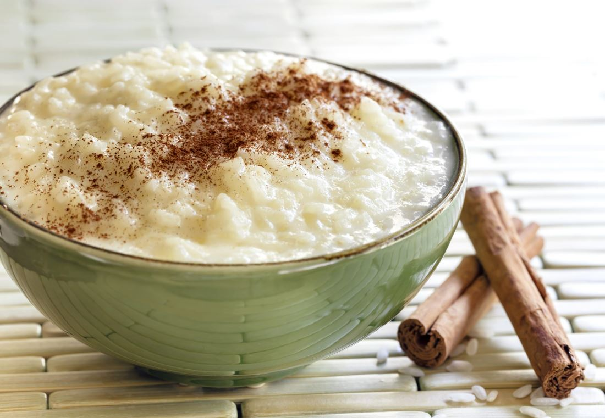

Rice Pudding

Old-Fashioned Rice Pudding is so creamy with the perfect texture and
sweetness. Only a handful of ingredients and a little patience are
needed to make this old time favorite dessert.
Ingredients
- 6 cups whole milk
- 1/2 cup sugar
- 1/2 teaspoon salt
- 1/2 cup long grain white rice
- 2 teaspoons vanilla extract
- ground cinnamon
Instrucctions
- In a large saucepan, combine 5 1/2 cups milk, sugar, and salt.
Bring to a boil over medium-high heat.
- Stir in rice and reduce heat to low. Be sure to adjust the heat so
that it is at a gentle simmer.
- Stirring occasionally, cook for 50 to 60 minutes. Mixture should thicken
up to consistency of yogurt.
- Once thickened, remove from heat and stir in vanilla.
- Let cool and then refrigerate. The last 1/2 cup milk is stirred in just before
serving. Sprinkle with cinnamon if desired.
Back